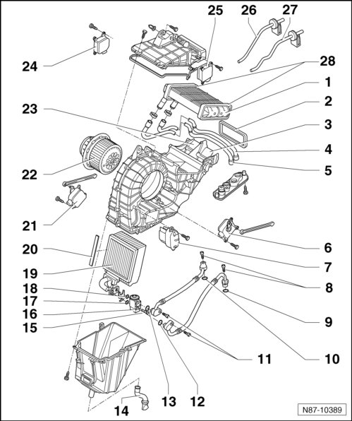

Second Rear Heating and A/C Unit Overview
Second Rear Heating and A/C Unit

1 Rear heater core
• Removing and installing, refer to--> [ Rear A/C Unit Heat Exchanger ] Service and Repair
2 Seal
3 Right air door
4 Refrigerant line supply hose
5 Refrigerant line return hose
6 Right Rear Temperature Door Motor (V314)
• Removing and installing, refer to --> [ Right Rear Temperature Door ] Service and Repair.
7 Rear Blower Regulation Sensor (G463)
• Removing and installing, refer to --> [ Rear Blower Regulation Sensor ] Rear Blower Regulation Sensor
8 Securing bolts
• 12 ± 1.5 Nm
• Refrigerant line
9 O-ring
• Replacing
• 14.3 mm; 2.4 mm
10 O-ring
• Replacing
• 10.8 mm; 1.8 mm
11 Securing bolts
• Refrigerant line to expansion valve
• 10 ± 1 Nm
12 O-ring
• Replacing
• 14.3 mm; 2.4 mm
13 O-ring
• Replacing
• 10.8 mm; 1.8 mm
14 Condensation water hose with valve
• Ensure condensation water hose with valve is not kinked or pinched when installing. Refer to --> [ Rear Condensation Water Hose with Valve, Checking ] Rear Condensation Water Hose with Valve, Checking
15 Cylindrical screw
16 Expansion Valve
17 O-ring
• replacing
• 10.8 mm; 1.8 mm
18 O-ring
• replacing
• 14.3 mm; 2.4 mm
19 Rear evaporator
• Removing and installing, refer to --> [ Rear Evaporator A/C Unit ] Rear Evaporator A/C Unit
20 Seal
21 Left Rear Temperature Door Motor (V313)
• Removing and installing, refer to --> [ Left Rear Temperature Door ] Service and Repair
22 Rear Blower Regulation Motor (Bitron) (V306)
• Removing and installing, refer to --> [ Rear Blower Regulation ] Service and Repair
23 Left air door
24 Left Rear Air Door Motor (V239)
• Removing and installing, refer to --> [ Left Rear Air Door ] Service and Repair
25 Right Rear Air Door Motor (V240)
• Removing and installing, refer to --> [ Right Rear Air Door ] Service and Repair
26 Left Rear Vent Temperature Sensor (G405)
• Removing and installing, refer to --> [ Left Rear Vent ] Left Rear Vent
27 Right Rear Vent Temperature Sensor (G406)
• Removing and installing, refer to --> [ Right Rear Vent ] Right Rear Vent
28 Rear heat exchanger seal